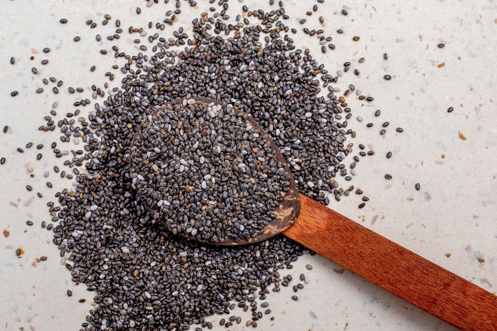

Struggling with Can Allulose Replace Sugar? Try This Daily Reset

Key takeaways
- I ruined my third batch of keto chocolate chip cookies last year before I finally broke down and asked: Can Allulose Replace Sugar?
- My kitchen smelled like burnt molasses, and the texture felt like chewing on wet sand.
- Track what feels sustainable and adjust gradually.
I ruined my third batch of keto chocolate chip cookies last year before I finally broke down and asked: Can Allulose Replace Sugar? My kitchen smelled like burnt molasses, and the texture felt like chewing on wet sand.
It was frustrating, costly, and honestly made me want to give up on healthy baking altogether. But after months of trial, error, and digging into the science, I figured out how to make this rare sugar work without ruining dessert.
When you start questioning whether Can Allulose Replace Sugar? in your daily coffee or baked goods, you have to look at how it behaves in real life. Unlike erythritol, it won't leave a weird cooling sensation in your throat.
It dissolves effortlessly in icy cold drinks like iced tea or homemade lemonade, which was a massive win for my afternoon routine. If you want a related healthy tip for energy, pairing sweetener swaps with steady hydration makes a world of difference.
However, because allulose is a rare monosaccharide, your body absorbs it in the small intestine but doesn't metabolize it. That means practically zero calories and zero impact on your blood glucose levels.
Check out another practical guide on managing blood sugar spikes if you're working on insulin sensitivity. I've personally seen my morning fasting glucose stay completely flat after drinking allulose-sweetened tea the night before.
The 2-Minute Win
Lower your oven temperature by 25°F and replace 1 cup of sugar with 1.3 cups of allulose to keep your baked goods from scorching while matching the sweetness!
Baking is where things get tricky. Because allulose caramelizes faster than regular table sugar, my first few pans of muffins turned dark brown while remaining raw in the center.
To fix this, lower your oven dial down by 25 degrees Fahrenheit and add a couple of extra minutes to the baking timer. For more baking wisdom, check out this similar wellness insight on ingredient swaps.
Pro-Tip: Mix allulose with a tablespoon of high-quality fats like butter or coconut oil in recipes to get that perfect soft-chew bakery texture without the sugar crash.
Another area where I love using zero-calorie sweeteners is in savory salad dressings and marinades. A dash of sweetness balances out acidic vinegars beautifully without triggering intense sugar cravings later in the day.
When making homemade vinaigrettes, I love whisking allulose with a rich, single-origin fat like Extra Virgin Olive Oil to create a smooth, restaurant-style dressing that supports heart health. To stay consistent with this, prep a jar of dressing every Sunday morning.
Is it a complete replacement for sugar in every single scenario? Not quite, but it gets pretty close once you respect its unique browning points and lower sweet intensity.
If you're ready to reboot your pantry habits, feel free to explore more healthy-habits guides to build sustainable daily routines that actually last. Small changes compound fast when you stick to them.
Educational only — not medical advice.
Disclosure: This page may contain affiliate links.
Recommended Reading
- The Ultimate Guide to Daily Hydration: Boost Energy & Wellness
- Eating Olive Oil Before Carbs Has A Surprising Effect On Blood Sugar
- Coffee vs. Energy Drinks: Your Heart's Best Friend or Worst Enemy?
More in healthy-habits
 healthy-habits
healthy-habitsWhat Nobody Tells You About Scientists Discover Surprising Heart Benefits Of Eating Avocado And Mango Every Day
Scientists discover surprising heart benefits of eating avocado and mango every day. Learn how this powerful fruit pairi
Read article →
healthy-habitsA Simple Protein Swap For Healthy Aging You Can Start Today
Discover how a simple protein swap for healthy aging can boost muscle retention, protect your joints, and revitalize you
Read article →Related posts
healthy-habitsWhat Nobody Tells You About Scientists Discover Surprising Heart Benefits Of Eating Avocado And Mango Every Day
Scientists discover surprising heart benefits of eating avocado and mango every day. Learn how this powerful fruit pairi
Read article →A Simple Protein Swap For Healthy Aging You Can Start Today
Discover how a simple protein swap for healthy aging can boost muscle retention, protect your joints, and revitalize you
Read article →Kids Who Eat More Ultra-Processed Foods Show A Troubling Brain Response
New studies reveal Kids Who Eat More Ultra-Processed Foods Show A Troubling Brain Response. Learn practical, science-bac
Read article →